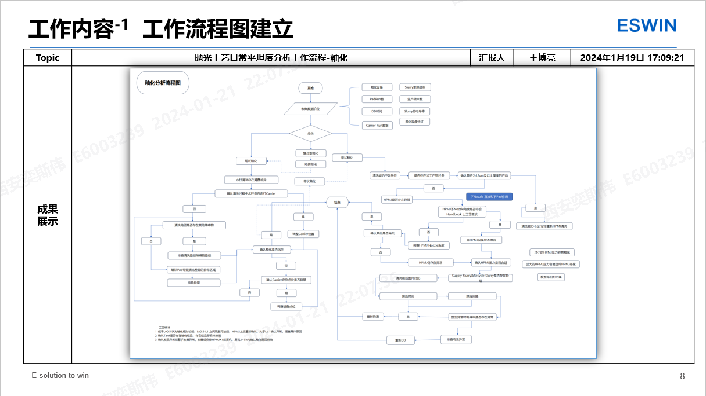
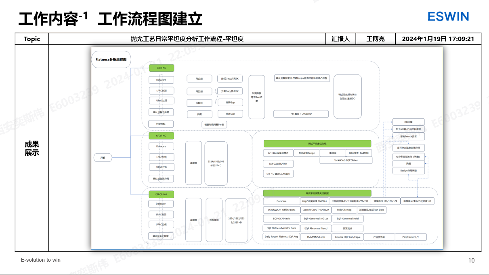

主打就是记录
2024年1月21日 08:35:09 Daily Logs
前排留名
不想动弹
妈呀，不想动弹咋搞
量产转速
开发转速
返工转速
山河万里持枪肆意笑纳
感觉自己就像个二傻子 每天想的都是一些什么玩意儿
？？！！！！
马达加斯加的企鹅
你这个年龄段是怎么能睡得着的？
狗改不了吃屎
这个点你怎么又犯困了
困得跟狗一样
困得跟狗一样还怎么工作
Identify the Root Cause
卧槽，还得是浩哥
默默的干了一个非常卧槽的工作
emmm
发现问题 发现什么问题 反馈设备调整 重点在于发现问题
反馈问题 釉化
调机异常都可以写 跑出Profile然后反馈解决
知道异常，然后怎么解决 有对应思路 环状釉化导致特殊Pattern
送测AVIS 为什么送测第4Run 原因 调查方向 加测原则
有的时候缺的也是一个解决问题的思路
但是解决问题的思路也是一个展示的点
各位领导好，我这边是抛光工艺的王博亮 下面是我的职级晋升答辩。
答辩主要分为以下四个部分，自我介绍，个人工作成果 个人能力举证 以及后续工作规划
这一页为我的个人履历，这边为之前的工作的工作经历，我这边是18年合工大本科毕业的，化学工程与工艺专业，毕业后在BOEb5那边工作了四年之后离职进入的Eswin，期间离职待业期间也在BYD工作了三个月，以上就是我的简要的工作履历。
这一页主要展示的是我的业绩成果，
承接目录，在工作履历之后这一页展示的就是我的业绩成果，
作为职级晋升答辩的主要内容，这页为我的业绩成果展示。
业绩成果我这边主要从三个方面开始展开，
1. 第一部分，成本降低方面，
这一点，我将从三个方面开始展开，
1.1 第一部分，SR310的导入，作为抛光工艺段最重要的部分，我们成功的在2023年第三季度完成了SR310的量产性评价，实现了全设备的量产性导入。
SR310自从我去年十一月份入职以来，就一直在着手量产性评价导入，
虽然该项目的本质主要是由于Lapmaster厂商原有抛光液1306抛光液的迭代升级1306B导致1306断供，
但是导入SR310也有我们成本降低的需求，导入SR310可以显著的完成我们实现量产成本降低的目标。
1.2 第二部分，那就是抛光抛光垫寿命的延长。
在我入职以来，我们抛光垫的寿命额定只有600Run，
但是由于24h DD的存在，以及设备工艺的不稳定性，经常性的会出现提前更换Pad的情况，导致其平均寿命只有不到500Run，平均480Run不到的寿命对于抛光的成本消耗无疑是非常巨大的影响，
但是随着我们抛光的长期不断的工艺改善以及进一步的实践，目前已经基本完成了Pad寿命630Run的全面导入，总体性的Pad平均寿命可以做到600Run以上，基本上大部分可以完成630Run的额定寿命，
而且借助于TFO等低规格产品，在保证数据稳定的前提之下，离开品质规格的限制，目前的试验性PCT过程中，已经实现了Pad寿命800Run的评价突破。
1.3 第三部分，即DD盘二元化的导入，
在之前抛光过程刚建立的时候，我们只能受制于人，在修垫过程中使用原厂Lapmaster的DD盘，但同样借助于我们的不懈努力，我们已经完成了Asashi新厂商二元化DD盘的导入，
新厂商，不同粗糙度DD盘的导入，让我们在修垫的时候有了更多的选择，同时可以根据不同的产品需求，进行GBIR和SFQR等多平坦度参数的特异性调整，同时也兼顾产品品质和形貌的需求，达到不同的产品需求。
2 第二部分，其实也在之前的部分有讲到，
第二部分为产能提升，作为公司去年年度的持续性目标，产能提升贯穿了我入司以来的持久性任务目标。
2.1 在这方面，我们抛光工艺在持久不断的努力之下，通过验证导入48度高压清洗喷头（45° Nozzle）成功的导入了48h的DD，
降低了DD频率，减少了设备的维护性非生产时间，提高了设备的TT的同时，从这方面降低了设备非生产时间的消耗，进一步提升了产能。
2.2 另一方面，主要是DSP抛光设备的逐步导入。
在我入职以来，抛光设备的导入时永恒的节奏，从入职以来的DSP33台抛光设备到现在的46+1台生产设备的稳定量产，每一台设备的量产型评估以及进一步的设备运营，我们都在一直稳步推进，终于在11月份完成了全部抛光设备的量产导入工作。
所谓的46+1，也包含有一台国产DSP 即DSP08的阶段性量产导入。
该设备从一开始相对问题点就比较多，但随着我们的努力，目前已完成了量产型评价。
2.3 还有就是其中很重要的一部分就是关于设备参数优化，调机过程中优化加工过程，通过对电导率和加工压力，加工流量，加工转速等多个参数的调整优化DSP设备的Process Time，从根源上提升加工效率。
最终，在我们的共同努力之下，抛光的月度产能有了有效的提升，实现了从月度产能14K到现有产能15-17k的量的突破，顺利完成了公司产能快速提升的任务目标。
3 第三部分，这一部分讲的是抛光的品质改善。
作为抛光工艺工程师，品质改善作为我们的本职工作，但是在这方面，通过长期不断的努力，我们这边也共同输出了一定的成果。
下面主要将结合平坦度和Particle两方面对这个进行进一步的展开说明。
3.1 第一部分为平坦度改善，在今年的年度过程中，我主要列出了一下三个方面的平坦度改善履历，
一个是调机方法的优化，及时归纳总结，形成了高效快速的调机方案，优化调机方式，快速对应，争取在2~3Run 内完成DD后数据的稳定，对于设备的参数已形成了有效的数据模型，利用模型快速进行参数调控。
3.2 第二部分为DD Recipe的优化。
作为抛光过程中Particle和平坦度调控的有效手段，单台设备固定周期的DD的主要目的就是去除Pad上的参与的抛光产物，同时也会对盘面形貌进行重新确定，因此DD 之后平坦度数据往往会出现较大的波动，
我这边通过优化DD Recipe，根据去厚及上次DD区间内的平坦度数据，及时的对DD的加工压力和时间进行调整，同时，也结合现有DD盘的能力，科学的调度调整不同设备使用的DD盘，确保抛光制程的平稳波动，有效的保障平坦度。
3.3 第三部分，即为新Pad抬起之后的Gap/SK优化。
之前的方式，我们新Pad抬起后只是根据厂商建议的Gap/SK进行设定，过程中缺乏有效的指导，相当于每次新Pad抬起后都需要重新调机，
后面我们根据设备调整稳定后的水平确认到该设备稳定上次的Gap/Sk值，提高了调机效率，
减少了调机Dummy的使用，减少因为新Pad调机带来的品质波动，达到了品质改善的目的。
3.4/5 另外，在Particle改善方向，这边也成功的完成了48h 换液和Pad釉化的持续改善，其中的Pad釉化也输出了一个有效的专利。
这一页是我的工作内容介绍，主要是展示一下我个人这边主要的工作内容。
工作内容将从以下方面开展，
1. 工艺运维，作为DSP的调机工艺工程师，负责抛光设备的日常稳定使我们的工艺职责。
1.1 在日常生产中，由于抛光过程的复杂性，抛光Wafer在加工过程中往往受到Wafer，抛光液，抛光垫，加工过程等多方面的影响，加工过程中支撑并不是很稳定，经常性会发生数据波动，所以需要及时的数据调机，维持数据得稳定。
工艺维稳，在调试过程中需要关注Datacare，加工履历等多方面的因素，及时对其进行异常分析。
1.2 然后另外的一方面就是设备间的差异，受多方面的影响，人员对于设备的关注程度有限，以及设备自身的因素，设备本身数据存在较大的设备差异，因此我们需要进行Daily别的设备差异分析，减少设备差异。
维持设备的整体稳定。
2. 第二部分，过程工艺改善，在DSP加工过程中，主要负责DSP平坦度和异物良率的稳定和提升，进行初步的品质改善。
2.1 在日常完成的工作有，DSP日常异常设备的平坦度调查以及异常调查确定后的原因跟踪，
2.2 以及对于突发的异常，进行DSP工序的履历调查，确认过程异常点，排查设备加工履历是否存在异常，对于异常点进行跟踪，确认问题是否得到了有效解决，若发生问题，还需要进一步对于产品和设备进行初步处理，汇报，确认风险品，划定风险区间，和设备同时一起协同解决异常。
3 第三部分，工艺开发。
抛光工艺需要进一步进步，我们在工作之余，也及时协助外面常白工程师进行初步的工艺开发，提升抛光工艺的工艺能力。
3.1 主要可针对于抛光参数以及抛光物料进行多个方向的工艺开发，从设备，调机，物料物性等多个方面开始，在去年的一年时间里，我这边陆续开展了多项调机方法优化以及DSP新物料的导入。例如新物料的导入，Ashai DD盘的导入，返修新Carrier的导入，NTSL Carrier的导入，PU Pad测试等多项测试，
3.2 在Recipe釉化方向做了新Pad抬起以及DD补偿，开发转速验证等多项开发性质的工艺优化提升。
4 第四部分，作为部门的工程师，年度在釉化方向上提交了一篇建设性的专利，提出来一套科学的分析解决釉化的方法，也设计了一种可以规避Pad上环状釉化产生的机械设施，目前该专利已经论证通过。
这一页为我的业绩成果介绍。
这页我挑选了在八月中旬部门读书分享会上当时给大家分享的一个DSP抛光设备机差分析思路专题分享会的汇总PPT，
当时主要其中针对于迫切需要解决的设备机差，TMM/TMS 设备均值改善和标准差改善，即数据稳定性改善，进行了一个简单初步的分析，
针对于机差改善的分享主题，这边从人机料法环测的工程管理的六个因素进行了一个简要的分析，
首先提出为什么需要存在机差，论证了机差存在的不可避免的结果，
然后提出为什么需要改善机差，怎么改善机差，使用什么样的工具或者图表怎么分析辨识出机差，然后从哪方面入手开始分析机差，怎么对比，
最后分析现有已经产生或者调查出的原因，将原因归类分析，归集到了生产所对应的六要素之上，原因分门别类，给大家提供了一种有效的分析机差的思路，
有助于月度的设备机差分析，同时也提升了日常品质分析的效率。
这一页的工作成果展示主要展示了一下我的个人专利部分，
作为工作中具有创造性页面，我的个人专利最早从我转正的五月初开始酝酿分析，接手分析跑刚过程釉化，学习研读釉化相关的文献，结合对应的专业知识以及抛光现状，提出了抛光釉化存在产生的机理，根据抛光产物的形貌颜色等特征，提出来釉化产物为硅酸铵和硅酸钾的可能性，针对对于Wafer的去除理论做出简要的分析，得到了釉化发生的机理，
同时，针对于釉化改善，提出了建设性的改善流程，应用于生产实践之中，最终在此基础上形成了成果输出，输出个人专利一篇。

从这一页开始主要就开始展现一下我的日常工作内容。
首先继承前面的一页，专利中釉化改善的流程图。承接上面的专利结论输出的成果之一，可以承接上面的思路，进一步开展下一步分析的结果，流程图这边有三个，釉化改善平坦度改善和Particle改善 都已经有现成的结果输出，
接上一页，这一页展示的是Particle分析的流程图，将日常中工作进行规则化定量区分，按照对应规则进操作，提升工作效率。

接上页，从入职到现在一直都在进行完善的平坦度分析流程图，用于日常平坦度调试和分析。
工作内容的第二部分，工艺测试改善，所谓工艺测试，就应该按照PDCA的节点来完成，从Plan到Do的这一部分我一直都是我们负责进行，这点上我一直在努力，追赶和和进步。
第二部分的点，我这边针对于工作中的一个测试计划，固定Gap&SK调机方案验证的测试进行展开说明，做一个测试，按照STAR的原则进行逐步进行，这次测试的日期是在今年的6月份，从背景/方案/行动以及结果入手，进行结果展示。
第三部分，工作内容方面的介绍，这边主要放了一个关于我在去年12月份入职一个月之后输出的一个初步的工艺调机经验，作为一个工作内容的补充输出，该调机经验在目前DSP的调机流程中验证长期有效，所以这边也作为一个个人能力的补充说明。
第四部分，工作下阶段规划，在近期，我们将一起完成DSP ILU设备的Set Up 和PCT Plan，开展进一步的设备Release工作，完成ILU和AGV的导入，完成DSP工艺的全程自动化，减少DSP工艺过程中人员的参与，尽量减少工艺波动六要素中人员这一部分的比重，从根本上提升品质，按照部门今年的工作计划，逐步完成DSP NTSL Carrier的二元化导入，以及后续Carrier Body&Insert的同时返修，以及在SR310新Polish Slurry的基础上，完成新款Slurry的导入，降低因为Slurry影响带来的Process 品质波动。
长期规划方面 ，这边积极响应公司降本增效的计划，提升个人工作效率，提高个人能力，着眼提升抛光硅片的品质，为完成公司2024年度降本增效计划贡献自己的力量，学习关于硅片更多的参数知识，从“理论”走向“实际”
作为个人提升，我也将从以下方面入手
加强专业文献的阅读，丰富自身理论知识
多做测试、多与设备打交道，提升个人能力
提升个人科研和解决问题的能力，学习高Band员工的思维逻辑
以上，就是我的个人答辩报告